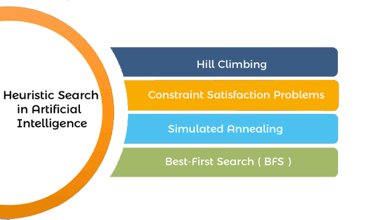

One of the core methods AI systems use to navigate problem-solving is through heuristic search techniques. These techniques are essential for tasks that involve finding the best path from a starting point to a goal state, such as in navigation systems, game playing, and optimization problems. This article delves into what heuristic search is, its significance, and the various techniques employed in AI. One of the core methods AI systems use to navigate problem-solving is through heuristic search techniques. These techniques are essential for tasks that involve finding the best path from a starting point to a goal state, such as in navigation systems, game playing, and optimization problems. This article delves into what heuristic search is, its significance, and the various techniques employed in AI.
Heuristics operates on the search space of a problem to find the best or closest-to-optimal solution via the use of systematic algorithms. In contrast to a brute-force approach, which checks all possible solutions exhaustively, a heuristic search method uses heuristic information to define a route that seems more plausible than the rest. Heuristics, in this case, refer to a set of criteria or rules of thumb that offer an estimate of a firm’s profitability. Utilizing heuristic guiding, the algorithms determine the balance between exploration and exploitation, and thus they can successfully tackle demanding issues. Therefore, they enable an efficient solution finding process.
The primary benefit of using heuristic search techniques in AI is their ability to handle large search spaces. Heuristics help to prioritize which paths are most likely to lead to a solution, significantly reducing the number of paths that must be explored. This not only speeds up the search process but also makes it feasible to solve problems that are otherwise too complex to handle with exact algorithms.
Heuristic search algorithms typically comprise several essential components:
Over the history of heuristic search algorithms, there have been a lot of techniques created to improve them further and attend different problem domains. Some prominent techniques include:
A* Search Algorithm is perhaps the most well-known heuristic search algorithm. It uses a best-first search and finds the least-cost path from a given initial node to a target node. It has a heuristic function, often denoted as f(n) = g(n) + h(n), where g(n) is the cost from the start node to n, and h(n) is a heuristic that estimates the cost of the cheapest path from n to the goal. A* is widely used in pathfinding and graph traversal.
Greedy best-first search expands the node that is closest to the goal, as estimated by a heuristic function. Unlike A*, which takes into account the cost of the path from the start node to the current node, the greedy best-first search only prioritizes the estimated cost from the current node to the goal. This makes it faster but less optimal than A*.
Hill climbing is a heuristic search used for mathematical optimization problems. It is a variant of the gradient ascent method. Starting from a random point, the algorithm takes steps in the direction of increasing elevation or value to find the peak of the mountain or the optimal solution to the problem. However, it may settle for a local maximum and not reach the global maximum.
Inspired by the process of annealing in metallurgy, simulated annealing is a probabilistic technique for approximating the global optimum of a given function. It allows the algorithm to jump out of any local optimums in search of the global optimum by probabilistically deciding whether to accept or reject a higher-cost solution during the early phases of the search.
Beam search is a heuristic search algorithm that explores a graph by expanding the most promising nodes in a limited set or “beam”. The beam width, which limits the number of nodes stored in memory, plays a crucial role in the performance and accuracy of the search.
Heuristic search techniques find application in a wide range of problem-solving scenarios, including:
Heuristic search techniques offer several advantages:
Heuristic search methodologies open into the AI toolbox, which enables the refined exploration and traversal of perplexing issue areas equipped with a precise analytic precision that is unquenchable in the midst of challenging circumstances. Using heuristic-based approach, these algorithms can achieve an equilibrium between exploring the solution space and exploiting what is already known and get near-optimal solution to at least some domains. With the development of AI even further towards perfection, new strides in progress with heuristic search algorithms will undoubtedly lead to the exploration of more effective methods for problems resolving and decision making.